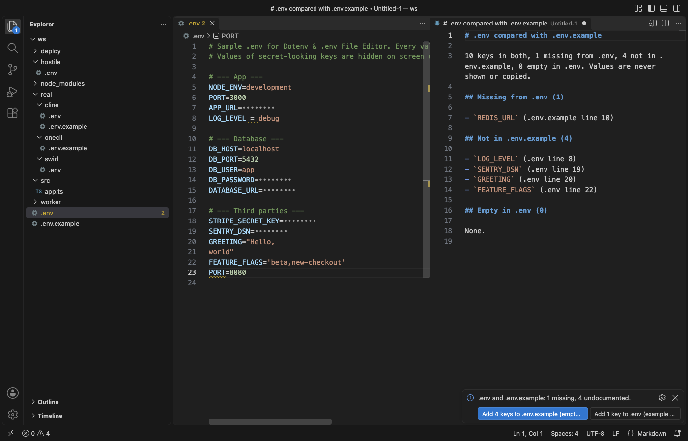

Open files in VS Code and Cursor / Developer files
Compare a .env file with .env.example in VS Code
When an app fails after a pull, a key that a teammate added to .env.example is often missing from your own .env. Dotenv & .env File Editor compares the two files in VS Code and lists the keys missing from .env, the keys .env.example does not document and the keys that are empty in .env, with line numbers and never with your values. The compare is a Zovo Pro tool (USD 19 once) with 3 free tries.
Free, MIT license. Extension ID zovo.zovo-dotenv, version 0.1.0. Needs VS Code 1.90.0 or newer.

Steps in VS Code
- Install Dotenv & .env File Editor from the Marketplace, or press Ctrl+P (Cmd+P on macOS) and run
ext install zovo.zovo-dotenv. - Open your
.envfile and run "Dotenv: Compare .env with .env.example (Pro)..." from the Command Palette, or right-click the file in the Explorer and pick "Zovo Pro: Compare .env with .env.example". - The tool looks for
.env.example,.env.sample,.env.templateor.env.distin the same folder. If none is there, it offers to create.env.exampleor to pick another file. - Read the report that opens beside your file. It lists, with line numbers, the keys missing from .env, the keys not in .env.example and the keys that are empty in .env.
- To close the gaps, click "Add N keys to .env (example values)" in the message. The missing keys go to the end of .env with the values from the template.
- Click "Add N keys to .env.example (empty values)" to document your extra keys. They are added with no value, so no secret ends up in the file you commit.
Where Zovo Pro saves time
Syntax colors for .env files, secret values hidden on screen, problems with quick fixes (a key set twice, spaces around =, a quote that never closes), Format Document, the outline of keys and Copy the Value on This Line are free, offline and need no account. In code, a hover on process.env.X shows which .env file sets the key, and F12 opens that line.
Reading two .env files side by side works for ten keys, not for sixty. Compare .env with .env.example does it in one step, counts the keys that are in both, and adds the missing keys to either file. The other two Pro tools of the extension find the variables that code reads and no .env file sets, and convert a .env file to JSON, YAML, a Docker Compose environment block, a Kubernetes Secret or ConfigMap, a GitHub Actions env block or shell exports.
With Compare .env with .env.example (Zovo Pro)
- Run "Dotenv: Compare .env with .env.example (Pro)...", or right-click a .env file and pick "Zovo Pro: Compare .env with .env.example".
- A try counts only when the report opens. Escape or Cancel never uses one.
- Zovo Pro is USD 19 once and unlocks the Pro tools in every Zovo extension.
Compare .env with .env.example works 3 times on your computer before it asks for a license, and a try counts only when you get a result. Opening a file shows no popup and no countdown.
Zovo Pro costs USD 19 once. It is not a subscription, and it turns on the Pro tools in every Zovo extension, not only Dotenv & .env File Editor. After a card payment (Stripe) your license key shows on the next page. In VS Code, run "Zovo Pro: Enter Zovo Pro license key" from the Command Palette and paste it. The key is checked on your computer, with no network call. With GitHub Sponsors, pick the "$19 one time" tier, then run "Zovo Pro: I already paid: unlock with GitHub Sponsors" and sign in with the same GitHub account. With PayPal, send USD 19 with "Zovo Pro" in the note and the key comes by email within a day.
A team of 5: USD 59 once, by card or by PayPal. Every rule and every Pro tool is on the Zovo Pro page.
Steps in Cursor, Windsurf or VSCodium
- Open the Extensions view with Ctrl+Shift+X (Cmd+Shift+X on macOS).
- Search for
zovo.zovo-dotenvand click Install. Cursor, Windsurf and VSCodium install from Open VSX, where it is published aszovo/zovo-dotenv. - If your editor has no gallery, download the .vsix from the Open VSX page and run "Extensions: Install from VSIX...".
- Then use it the same way as in VS Code.
What Dotenv & .env File Editor handles
.env,.env.local,.env.production,*.envand.flaskenvfiles.- Templates named
.env.example,.env.sample,.env.templateor.env.dist, or any file you pick. - Quoted, unquoted, exported and multi-line values.
- Keys that are set but empty in .env.
What it does not do
- The compare checks key names only. It does not tell you whether a value is right.
- It looks for the template in the same folder as the .env file. For a template in another folder, choose "Pick another file..." when it asks.
- Keys added to .env get the example value from the template, or no value. Put in the real values before you run the app.
- The report opens as an unsaved Markdown tab. Save it yourself if you want to keep it.
Other options
- dotenv-linter. A free command-line checker for .env files. Its compare command lists the keys that one file has and the other lacks.
- dotenv-safe. A Node.js package that stops your app at start when a key from .env.example is not set. It checks at run time, not in the editor.
Install counts and Open VSX status were checked on 13 November 2026. Descriptions in quotes are the extensions' own.
Questions
Does the compare show or copy my secret values?
No. The report names keys and line numbers only. When you add your extra keys to .env.example, they get empty values.
What if my project has no .env.example yet?
Run the compare anyway and choose "Create .env.example next to .env". Then click the button that adds your keys to it with empty values.
Can I compare .env.local or .env.production?
Yes. Open that file and run the compare. It looks for the template in the same folder.
Does it work in Cursor or Windsurf?
Yes. Cursor, Windsurf and VSCodium install extensions from Open VSX. Search for the extension in their Extensions view and install it there.
More about Dotenv & .env File Editor
Read the Dotenv & .env File Editor page for every feature and setting, or the source code on GitHub.
Related guides
- Edit a .env file in VS Code without showing your secrets
- Find the environment variables that your code reads and .env does not set
- Convert a .env file to a Kubernetes Secret in VS Code
- Read a HAR file offline in VS Code
Zovo Pro and support
Zovo Pro: USD 19 once, every Zovo viewer. It turns on the Pro tools in this extension and in the other Zovo extensions you use. The free features stay free.
After a card payment your license key shows on the next page. Paste it with the command "Zovo Pro: Enter a key".
You can also support the work with no Pro:
Need your format supported?
Open a format request with a sample file, and I reply there whether it can be done. For USD 299 once, through this GitHub Sponsors tier, I add your file format or a missing feature to this extension, with tests, within 7 days.